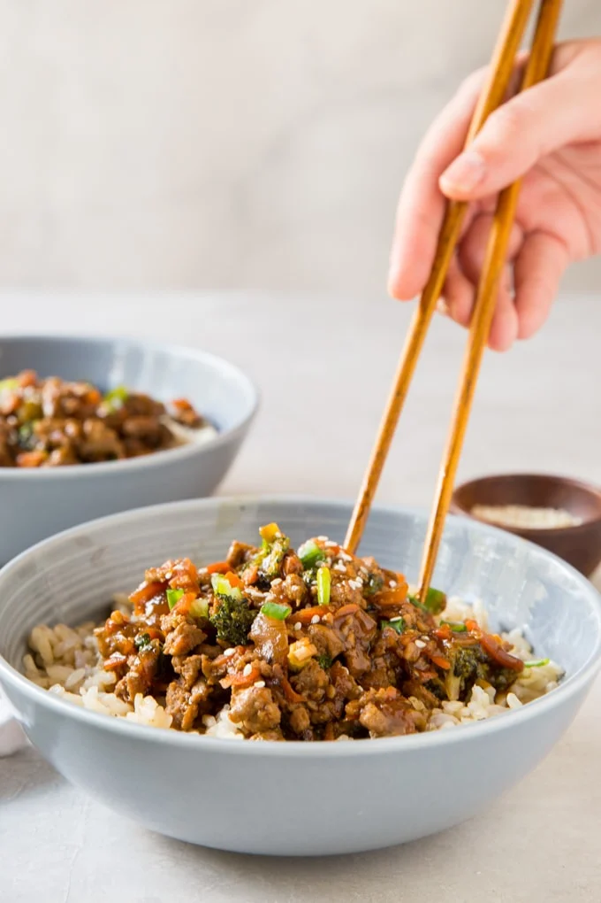

healthy turkey teriyaki rice bowl

The ground turkey is juicy and the teriyaki sauce is sweet and flavorful. Add in all the wonderful veggies and you’ve got a perfectly complete meal that makes great leftovers.
Ingredients
Teriyaki sauce:
- 1/2 cup Low Sodium Soy Sauce
- 1/4 cup water
- 2 tablespoons Red Wine Vinegar
- 2 tablespoons brown sugar or less as desired
- 2 tablespoons granulated sugar or less as desired
- 2 teaspoons minced garlic
- 1 teaspoon ground ginger
- 1 tablespoon cornstarch
- 2 tablespoons warm water
Ground turkey:
- 1 tablespoon vegetable oil
- 1/2 cup diced onion
- 2 tablespoons minced garlic
- 1 pound Ground Turkey
- 1 cup finely chopped broccoli
- 2 large carrots peeled and grated
- 2 green onions diced, for garnish
- 4 cups cooked white or brown rice divided
Instructions
- Mix soy sauce, ¼ cup water, red wine vinegar, sugars, garlic and ginger in a small saucepan over medium heat. Stir with a whisk until sugar is dissolved.
- In a small bowl, whisk together 2 tablespoons warm water and cornstarch until cornstarch is completely dissolved.
- Heat sauce over medium high heat. Slowly whisk in cornstarch mixture and simmer until thickened. Remove from heat and set aside.
- Heat vegetable oil in a large skillet over medium-high heat. Add diced onions and cook until soft.
- Crumble ground turkey and garlic into the pan and cook until turkey is about half cooked. Add grated carrots and chopped broccoli and continue to cook until turkey is no longer pink.
- Pour teriyaki sauce over cooked turkey and vegetable mixture and stir. Simmer for about five minutes to combine the flavors.
- Spoon meat over rice or noodles. Garnish with green onions and serve immediately.
Notes
- Teriyaki Sauce is generally pretty sweet. However, feel free to cut back on the amount of sugar in the sauce. 1 tablespoon of each would suffice if you prefer a more savory than sweet flavor.
- The nutritional information is based on serving this teriyaki turkey over white rice. Use brown rice or just less rice to reduce calories and carbs.
- Feel free to customize this recipe with your favorite vegetables.
- A note about SERVING SIZE: A serving is is approximately ¾ cup of rice and one cup of the meat/veggies.
- The serving sizes are approximate and will vary depending on a variety of factors, like how much you cook your veggies down and what size your cuts of vegetables are. As a meal, this recipe will make 4-6 servings.
NUTRITION
Calories: 380kcal |
Carbohydrates: 55g |
Protein: 28g |
Fat: 5g |
Saturated Fat: 1g |
Polyunsaturated Fat: 2g |
Monounsaturated Fat: 1g |
Trans Fat: 0.03g
Cholesterol: 50mg |
Sodium: 994mg |
Potassium: 606mg |
Fiber: 2g |
Sugar: 12g |
Vitamin A: 4261IU |
Vitamin C: 21mg |
Calcium: 60mg |
Iron: 2mg